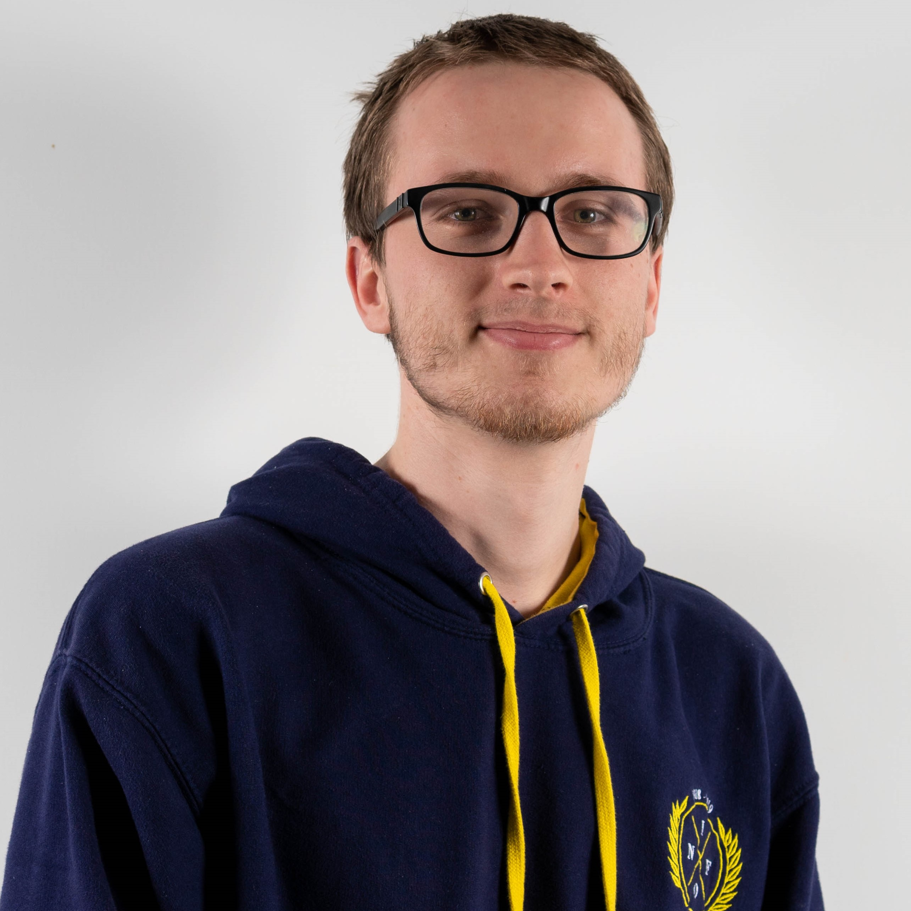

A propos de moi

Bonjour ! Je me nomme Alan Guivarch, suis actuellement en double diplôme à l'Université
du Québec à Chicoutimi en Maitrise en Informatique (jeux Vidéo) et à Polytech Grenoble pour un
diplôme d'ingénieur en Informatique. Passionné d'informatique et de jeux vidéo, je suis à la recherche
d'un stage de fin d'étude de 6 mois dans le développement de jeux vidéo (juillet 2021) afin d'appliquer mes
connaissances et d'en aquérir de nouvelles.

Flaunted est un jeu réalisé en 48H en équipe de 5 sur Unity pour la WonderJam UQAC d'Hiver 2021.
Le thème était "Résistance" et les trois styles imposés étaient Horreur,
Course et tour par tour. L'objectif de Flaunted est de s'enfuir d'un manoir habité
par un monstre.A chaque tour de jeu le joueur peut se déplacer librement, récuperer et utiliser des objet
pendant un temps limité.Le joueur doit trouver une clé dorée pour ouvrir la porte d'entrée du manoir.
Tâches réalisées:
Dévelopement du manoir, de la caméra, de la mécanique de la résistance mentale, de la lumière autour du personnage et des retour visuels
lors de l'utilisation d'un objet et lorsque le tour du joueur commence ou se termine.
GitHub
Lien pour télécharger le jeu

Moonstone est un jeu Diablo-like réalisé sur Unity dans le cadre du cours Laboratoire de Jeu vidéo de l'UQAC au trimestre d'Hiver 2021.
L'objectif de Moonstone est de vaincre le boss du dernier donjon. Pour atteindre cette objectif le joueur pourra visiter des donjon pour recolter
des ressources, gagner des niveaux afin d'améliorer ses statistiques et son équipement.
Tâches réalisées:
Système de statistiques, Personnage non joueur de l'enchantresse, mécanique pour lancer des sort, Récupération de plante, unification des interfaces
et de certaines mécaniques,

Moteur physique réalisé en C++ en groupe de 4 dans le cadre du cours de Maths et Physique pour le jeu vidéo de l'UQAC au trimestre d'Automne 2020. Ce moteur permet
de créer des entités simples auquelle l'on peut appliquer des forces (comme la gravité), il permet égalemement
de prendre en compte les collisions entre entités.
Tâches réalisées:
Implémentation des Vecteur3D, implémentation de la physique de ressort entre particules, implémentation de la résolution du contact entre
particule, implémentations des matrices 4x4, implémentation des Quaternions,
implémentations d'un OctTree pour optimiser la detection de colisions et un système de résolution de colisions grâce à cette OctTree

Dans le cadre du cours de Moteur de jeu vidéo de l'UQAC au trimestre d'Automne 2020, j'ai implémenté
des mécanismes supplémentaires sur un jeu multijoueur nommé "Chicken Dodge" en javaScript.
L'objectif du jeu est de récupérer le plus de rubis que son adversaire tout en esquivant les poulets
qui se traverse le terrain de jeu.
Les nouvelles mécaniques impléméntés sont :
- un mécanismes de batching pour les sprites, pour réduire le nombre d'appel de rendu
- implémentation d'un fragement shader utilisé lorque l'on prends un coup
- implémentation d'un QuadTree pour améliorer la gestion de collisions
- implémentation des fonctionnalités de régionalisation afin de supporter les champs substitués
- implémentation d'un leaderBoard
- ajout d'événements audio pertinents

Space Crusader est un jeu réalisé en java, afin de nous apprendre à manipuler des automates. En effet chaque éléments du jeu posséde
un automate, ainsi nous pouvons donner à n'importe quel élément du jeu le comportement d'un autre élément. L'objectif du jeu était de trouver
et de finir un donjon afin de récupérer un graal avant qu'une vague de lapin envahisse la planète. Si la planète est trop envahi le chevalier
peut changer de planète pour continuer ses recherches.
Tâche réalisée :